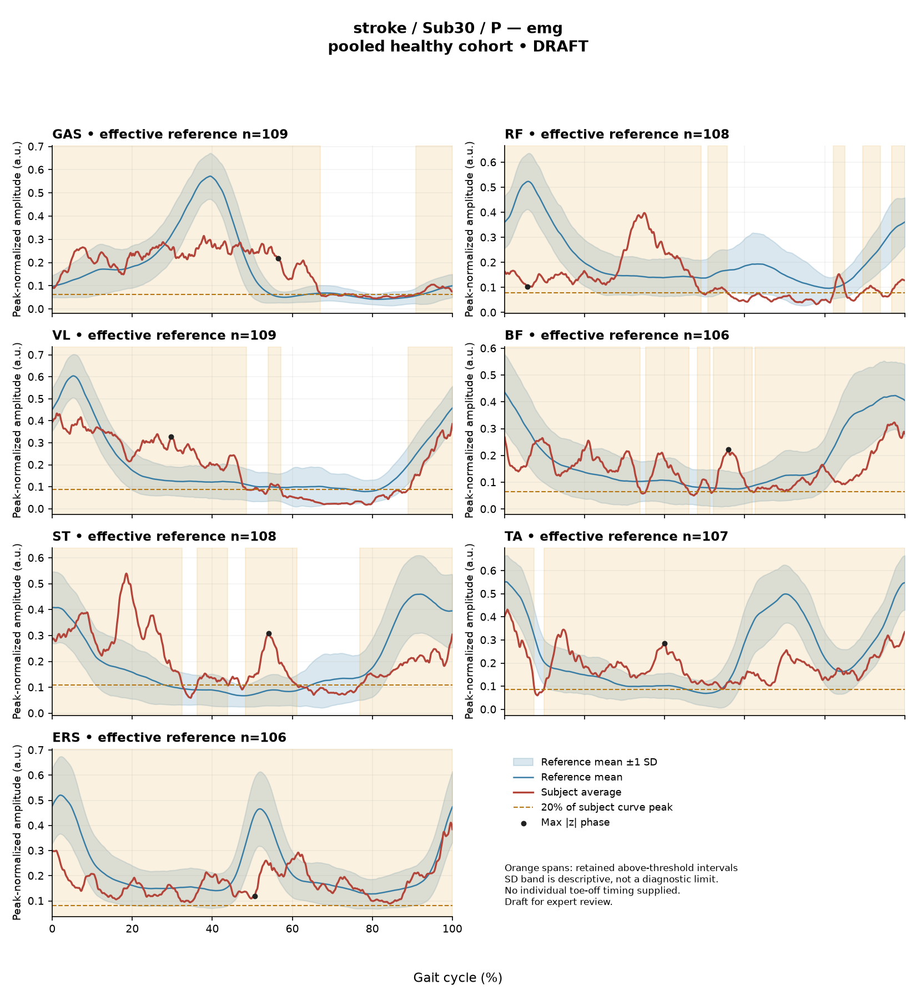

R5EED4063F6D81881
rater1 / 63 of 150 / Case stroke_Sub30_P / Review row 64
Report: verbatim text
Text file for exact quotations**1. Objective Findings**
* **Participant:** Stroke group, assessed on the paretic side.
* **Gait Speed:** 0.43 m/s.
* **Cadence:** 76.0 steps/min.
* **Step Length Symmetry Index:** 10.6% (using the successive-footfall definition). A positive value indicates the paretic step is longer than the non-paretic step.
* **Composite Kinematic Deviation Score (GPS-like):** 6.29.
* **Data Assessed:** Sagittal plane joint kinematics (ankle, knee, hip, pelvis) and ensemble-averaged EMG envelopes for GAS, RF, VL, BF, ST, TA, and ERS. (Coronal/transverse kinematics and non-paretic limb data are not supplied).
**2. EMG Envelope and Threshold Findings**
*Note: The following metrics describe regions where the ensemble-averaged, normalized EMG envelope exceeds 20% of its own peak for at least 3% of the cycle. These intervals describe the mean curve; they do not establish physiological onset/offset, continuous muscle contraction, or stride-to-stride variability. Relative amplitudes do not measure absolute neural drive, muscle force, or strength.*
* **GAS:** 78% of the cycle was above threshold, consisting of a single retained interval that wraps across the initial contact boundary (91%-67%). Peak normalized amplitude: 0.31.
* **RF:** 65% of the cycle was above threshold. Retained intervals were located at 51%-56%, 82%-85%, 90%-94%, and wrapping across the initial contact boundary (97%-49%). Peak normalized amplitude: 0.40.
* **VL:** 64% of the cycle was above threshold. Retained intervals were located at 54%-57% and wrapping across the boundary (89%-48%). Peak normalized amplitude: 0.43.
* **BF:** 95% of the cycle was above threshold. Retained intervals were located at 35%-46%, 48%-51%, 52%-62%, and wrapping across the boundary (63%-34%). Peak normalized amplitude: 0.32.
* **ST:** 79% of the cycle was above threshold. Retained intervals were located at 36%-44%, 48%-61%, and wrapping across the boundary (77%-32%). Peak normalized amplitude: 0.54.
* **TA:** 98% of the cycle was above threshold, occurring in a single retained interval wrapping across the initial contact boundary (10%-7%). Peak normalized amplitude: 0.43.
* **ERS:** 100% of the cycle was above threshold (interval 0%-100%), remaining above threshold across the entire cycle boundary. Based on the supplied evidence, there is no below-threshold segment for this averaged curve. Peak normalized amplitude: 0.41.
* **Co-Contraction Indices (CCI):** Calculated as a whole-cycle overlap index of the continuous normalized envelopes.
* *TA vs. GAS:* CCI is 0.71, which is above the provided healthy reference interval (median 0.39; 2.5th-97.5th percentile 0.24-0.59).
* *RF vs. BF:* CCI is 0.72, which is within the provided healthy reference interval (median 0.68; 2.5th-97.5th percentile 0.48-0.83).
* *Note:* A CCI value inside or outside a reference interval does not establish normal physiological co-activation, pathological stiffness, or impaired control; it also does not represent simultaneous activation time.
**3. Kinematic and Reference Comparisons**
*Note: The subject's gait speed (0.43 m/s) is well below the lowest speed in the healthy reference cohort (0.80 m/s). Because no speed-matched healthy reference exists in this dataset, any observed deviations conflate the effects of slow walking with stroke-specific control changes. The reference comparison is thus structurally limited and cannot independently establish a disease effect or clinical diagnosis.*
* **Composite Kinematic Score:** The GPS-like score of 6.29 falls between the healthy cohort median (5.1) and the 95th percentile (10.7).
* **Joint Kinematics (Sagittal Plane Summary Differences):**
* Ankle: Range of motion 15.8°; Gait Variable Score (GVS) 6.81.
* Knee: Range of motion 38.2°; GVS 7.20.
* Hip: Range of motion 31.2°; GVS 6.53.
* Pelvis: Range of motion 2.6°; GVS 4.14.
* **EMG Envelope Deviations:** Max |z| represents the single largest standardized difference between the subject's curve and the pooled healthy reference mean across 1001 phase points; it does not indicate absolute abnormality bounds by a conventional 2-SD rule.
* GAS: max |z| = 6.5 (above reference mean at 56% of cycle).
* RF: max |z| = 3.8 (below reference mean at 6% of cycle).
* VL: max |z| = 3.0 (above reference mean at 30% of cycle).
* BF: max |z| = 2.2 (above reference mean at 56% of cycle).
* ST: max |z| = 3.7 (above reference mean at 54% of cycle).
* TA: max |z| = 3.4 (above reference mean at 40% of cycle).
* ERS: max |z| = 2.2 (below reference mean at 51% of cycle).
**4. Questions for Further Clinical Assessment**
* How do the extensive above-threshold interval coverages (e.g., ERS at 100%, TA at 98%, BF at 95%) align with clinical evaluations of resting tone, volitional motor selectivity, and dynamic spasticity in this patient?
* Are the observed limits in sagittal plane kinematic ranges of motion (e.g., 15.8° at the ankle, 2.6° at the pelvis) associated with fixed structural joint restrictions or secondary to the patient's markedly reduced gait speed (0.43 m/s)?
* Does the elevated whole-cycle overlap index (CCI) between TA and GAS correlate with clinically observable alterations in ankle mechanics or functional clearance difficulties during observational gait assessment?
* Given that the step length symmetry index indicates a longer paretic step (10.6%), what compensatory balance strategies, stability constraints, or weight-bearing limitations on the non-paretic limb might be contributing to this specific asymmetry?Coverage rows
| Excel row | ID | Required content | Components |
|---|---|---|---|
| 360 | R103 | Describe walking speed 0.43 m/s and that it is below the stated 0.80 m/s reference floor; no reference at this speed is supplied. | AND: displayed speed and that it lies below the 0.80 m/s reference floor, so no speed-supported healthy reference exists in this dataset. Optional: cadence, speed-band label (not a functional claim). One sentence may also serve the comparability half of G03. |
| 361 | R104 | Convey distributed sagittal differences across knee, ankle AND hip, without emphasizing their exact ordering. Exact GVS values are optional; identify the findings as reference-relative sagittal summary differences. | Required: convey distributed, similar-magnitude differences across knee, ankle AND hip; one collective sentence suffices; naming one as marginally largest is acceptable if the others are stated as comparable. Exact values optional. |
| 362 | R105 | Describe GAS envelope above its phase-specific reference mean at approximately 56% of the analysis cycle (displayed max |z| 6.5). Within each route, muscle identity AND mean-relative direction AND approximate cycle location are required. Exact max-|z| repetition is optional. | Required for each route: muscle identity AND direction relative to the phase-specific reference mean AND approximate cycle location. Optional: exact max |z| value, comparison with the supplied endpoint span (descriptive only). Prohibited: percentile classification, gait phase, physiological onset, severity. |
| 363 | R108 | Describe the supplied successive-footfall step-length index 10.6% and its meaning: the paretic step is longer. | AND: displayed index and the direction supported by its sign. Optional: formula, definition wording. Acceptable phrasing for small displayed values: "a small difference with the paretic step slightly shorter/longer" (not a cutoff). Prohibited: restating the index as a percentage shortening (E01), severity grades, whole-gait symmetry generalization (E07 issue, not an omission). |
| 364 | G03 | Express a meaningful limitation of reference comparability AND why the comparison cannot establish disease effects or clinical diagnosis; for controls it cannot establish disease or overall normality. One statement may also support a case requirement. | AND: comparability and inference limitations |
Exact system input
Saved fileDraft a research gait-report interpretation for a physical therapist or physiatrist using only the supplied quantitative summary. This is a limited-evidence interpretation task, not diagnosis or treatment selection. Rules: - Describe the participant's actual group and side, available findings, and missing channels accurately. Healthy-group membership does not prove normal physiology; deviations from an empirical reference do not by themselves establish disease. - Treat detected EMG intervals and coverage as properties of an averaged envelope under the stated threshold and duration rule. Do not convert them into physiological onset, offset, duration, continuous contraction, or inactivity outside the intervals. You may describe reported coverage, retained intervals and boundary continuity at the mean-envelope level. Do not infer the same pattern in every individual stride. Say no below-threshold segment only when the supplied evidence establishes that; a rounded coverage value or no retained interval alone does not establish it. - Individual toe-off and matched muscle-specific timing references are not supplied in this task. Use percentages of the analysis cycle. When the input explicitly identifies an initial-contact boundary, you may name that boundary or describe numerical proximity to it. Do not assign stance/swing, loading response, pre-swing, mid-stance or another event to a percentage, or substitute a conventional 60% split. Anatomical muscle actions may be named, but do not map an interval to a gait-phase function such as clearance, push-off or weight acceptance. Do not characterize timing as normal, early, delayed or prolonged without the required evidence. - Respect the supplied normalization method. Relative envelope amplitude is not strength or force, and average curves do not establish stride-to-stride variability. - Report CCI as a whole-cycle overlap index of normalized EMG envelopes. You may compare it with the supplied empirical interval or a supplied median, including proximity to an endpoint. Do not invent an unavailable median. Being within that interval does not establish physiologically normal co-activation or normal muscle function; being outside it does not establish pathological co-activation, stiffness, impaired control or a diagnosis. CCI is not simultaneous activation time, muscular force or a phase-specific result. It depends on normalization and envelope methods; do not transfer values or thresholds from other studies or algorithms. - Describe GVS and GPS-like as summary differences from the stated reference. Neither localizes waveform direction or phase; ROM alone does not establish a clinical restriction without an appropriate comparison. Do not treat pooled calibration percentiles as matched leave-one-out normal limits. - Where using a reference comparison, convey both limited comparability and the inability to establish a disease effect or clinical diagnosis from that comparison. One clear explanation per report is enough; age and speed need not be recited as separate checklist words. A speed inside an overall range does not prove that an appropriate matched reference exists. Apply these limits to controls as well. - The location of maximum |z| is the largest standardized difference from the reference, not necessarily the time of peak envelope amplitude or a gait event. Above/below reference in an EMG row means relative to the phase-specific reference mean at that location, not relative to a healthy percentile limit. - Preserve numerical direction and the displayed precision. Do not invent values, clinical severity grades, statistical significance, or unavailable reference values. Descriptive comparisons with supplied values remain allowed. Near-boundary rounded values do not justify classifying hidden unrounded values. - Clinical follow-up questions may ask whether a mechanism or measurement issue exists; do not presuppose it has already been observed. Do not recommend treatment. If EMG is unavailable, section 2 may simply state that envelope timing, amplitude and CCI cannot be assessed. Reference-only plots do not provide patient EMG. Use exactly these four sections: 1. Objective Findings 2. EMG Envelope and Threshold Findings 3. Kinematic and Reference Comparisons 4. Questions for Further Clinical Assessment
Exact case input
Saved fileCandidate interpretation version: limited-evidence-v3.1-candidate
Draft the four-section report using only this subject's supplied evidence.
Metric definitions (read before interpreting any number below):
- All joint angles and ROM values are SAGITTAL PLANE only. Coronal/transverse data are not included.
- The released EMG curves are ensemble-averaged envelopes. For each participant and recorded muscle, normalization uses a shared maximum across the available strides before averaging; individual strides are not independently rescaled to their own peaks. This pipeline uses the released mean curves without further amplitude normalization. In the checked stroke release, the denominator is participant-, side-, and muscle-specific; it is not shared between sides. The local array audit verified 614 evaluable combinations, not all 700; 86 lacked valid nonzero paired samples. Amplitudes are relative envelope values, not absolute neural activation, force, or strength. Do not rank muscles as stronger or weaker from these amplitudes, or infer stride-to-stride variability from an average curve.
- Above-threshold intervals are the regions where the averaged envelope exceeds 20% of that curve's own peak, minimum retained interval 3% of the cycle (by sample count). An interval written as (X%-Y%) with X > Y wraps across the 100%->0% cycle boundary (envelope remains above threshold across the cycle-defining event). An onset of 0% is the analysis-window boundary, not necessarily a physiological onset. "No interval detected" means no region met the threshold + duration criteria; it does NOT mean the muscle is inactive or non-functional.
- CCI is the Falconer-Winter co-contraction index computed on the full continuous envelopes (2*common area / summed areas), so it can be non-zero even when the DETECTED burst intervals of the pair do not overlap (sub-threshold activity contributes).
- The composite kinematic deviation score is the RMS of the per-joint Gait Variable Scores over the sagittal channels provided ("GPS-like", not the validated 9-variable GPS).
- Step length symmetry index: 200*(paretic - non-paretic)/(paretic + non-paretic), in %. NEGATIVE means the paretic-side step is SHORTER. Two operational step-length definitions exist (successive-footfall: each heel's position at its own initial contact; instantaneous: both heels at the same instant) and give different values for some subjects -- the definition actually used is stated next to the symmetry value.
- "Max |z| deviation" is the LARGEST absolute z-score across all 1001 phase points of the cycle, comparing this curve to the healthy-cohort mean/SD at each phase. This is an extreme-value statistic, NOT a single-observation z-score: in this dataset every one of 109 healthy controls exceeds |z| = 2 on at least one muscle, and per-muscle healthy 95th percentiles for this statistic run 3.65 (ERS) to 4.61 (TA) -- higher still under leave-one-out. Do not label a value abnormal by the conventional 2-SD rule; use the healthy reference range given per muscle where provided.
- Healthy-cohort CCI reference (this dataset): RF-vs-BF median 0.68 (2.5th-97.5th pct 0.48-0.83); TA-vs-GAS median 0.39 (0.24-0.59). Composite score reference: median 5.1, 95th percentile 10.7.
- COHORT BACKGROUND (calibration context, not necessarily the exact reference used for this subject -- the actual reference composition is stated in a dedicated line with the subject data below): the full healthy cohort is 138 subjects for kinematics, effective n = 106-109 per muscle for EMG (29 controls have no usable EMG; completeness varies by age), pooling both body sides and all ages; it is not age- or speed-matched to this subject. A leave-one-out run uses one subject fewer than these counts.
- SPEED SUPPORT LIMIT (applies to most stroke subjects in this dataset): the healthy reference cohort's self-selected walking speeds span 0.80-1.79 m/s. If this subject's gait speed is below 0.80 m/s, NO speed-matched healthy reference exists in this dataset -- 41 of the 50 stroke subjects are below that floor. Deviations from the reference then conflate slow-walking effects with stroke-specific control changes, and the two cannot be separated from these data. Describe deviations from the reference as such; do not attribute them wholly to stroke pathology.
- Additional source fields are outside this input. Age, sex and gait events may be available in the release; time post-stroke, stroke clinical scores and a non-paretic-side designation apply only to the stroke cohort, as applicable. Do not claim every listed field exists for every participant. Distinguish not supplied, not applicable and documented absent recordings.
The released paretic-side cycle runs from initial contact of that limb at 0% to its next initial contact at 100%. The cycle boundary may be called initial contact; the endpoints are successive occurrences, not one instant. No intermediate event or phase boundary is supplied.
Model-visible information boundary: the summary contains mean-curve metrics and algorithm-detected intervals, not individual toe-off, matched normal muscle timing, stride-level variability, raw-signal quality checks, or expert plots. Information not supplied here must not be described as absent from the source dataset. Gait-cycle percentages alone do not identify gait phases.
Subject: Sub30_P (group: stroke, affected side: paretic)
Gait speed: 0.43 m/s (limited community ambulator (0.4-0.8 m/s)) [The ambulation label denotes a speed band only, not measured walking independence, safety or real-world community mobility.]
Cadence: 76.0 steps/min
Step length symmetry index: 10.6% (step-length definition: successive_footfall)
Composite kinematic deviation score (GPS-like): 6.29
Deviation reference actually used for this subject: 138 healthy subjects (pooled), 1001 phase points, source: main_cohort_excel.
EMG envelope findings:
- GAS: above-threshold interval(s) 91%-67% (wraps cycle boundary), 78% of cycle above threshold, above threshold across cycle boundary, peak normalized amplitude 0.31, max |z| vs healthy reference: 6.5 (above reference, at 56% of cycle)
- RF: above-threshold interval(s) 51%-56%; 82%-85%; 90%-94%; 97%-49% (wraps cycle boundary), 65% of cycle above threshold, above threshold across cycle boundary, peak normalized amplitude 0.40, max |z| vs healthy reference: 3.8 (below reference, at 6% of cycle)
- VL: above-threshold interval(s) 54%-57%; 89%-48% (wraps cycle boundary), 64% of cycle above threshold, above threshold across cycle boundary, peak normalized amplitude 0.43, max |z| vs healthy reference: 3.0 (above reference, at 30% of cycle)
- BF: above-threshold interval(s) 35%-46%; 48%-51%; 52%-62%; 63%-34% (wraps cycle boundary), 95% of cycle above threshold, above threshold across cycle boundary, peak normalized amplitude 0.32, max |z| vs healthy reference: 2.2 (above reference, at 56% of cycle)
- ST: above-threshold interval(s) 36%-44%; 48%-61%; 77%-32% (wraps cycle boundary), 79% of cycle above threshold, above threshold across cycle boundary, peak normalized amplitude 0.54, max |z| vs healthy reference: 3.7 (above reference, at 54% of cycle)
- TA: above-threshold interval(s) 10%-7% (wraps cycle boundary), 98% of cycle above threshold, above threshold across cycle boundary, peak normalized amplitude 0.43, max |z| vs healthy reference: 3.4 (above reference, at 40% of cycle)
- ERS: above-threshold interval(s) 0%-100%, 100% of cycle above threshold, above threshold across cycle boundary, peak normalized amplitude 0.41, max |z| vs healthy reference: 2.2 (below reference, at 51% of cycle)
Co-contraction indices:
- TA_vs_GAS: CCI = 0.71
- RF_vs_BF: CCI = 0.72
Joint kinematic findings (sagittal plane):
- AnkleAngles: range of motion 15.8 deg, Gait Variable Score 6.81
- KneeAngles: range of motion 38.2 deg, Gait Variable Score 7.20
- HipAngles: range of motion 31.2 deg, Gait Variable Score 6.53
- PelvisAngles: range of motion 2.6 deg, Gait Variable Score 4.14Reference card
Saved file# Reference context: stroke/Sub30_P Mean/SD reference: 138 controls; method pooled; exclusions: []. Effective reference counts: GAS=109, RF=108, VL=109, BF=106, ST=108, TA=107, ERS=106, AnkleAngles=138, KneeAngles=138, HipAngles=138, PelvisAngles=138. The exact system and user input files define what the model receives. The EMG and kinematic plots are supplementary expert evidence, not model inputs. The plotted mean plus/minus one SD is descriptive, not a clinical normal band. Negative lower EMG bands can result from mean minus SD; they do not imply negative recorded EMG. The max-|z| p95 span in the input is pooled calibration context. Complete muscle-specific LOO thresholds are not supplied; an appropriately indeterminate classification is allowed. Controls are excluded from their own mean/SD reference, but cohort-level calibration has prior reference-data reuse. It is not an independent matched clinical limit. GPS-like is a four-channel sagittal composite, not the validated nine-variable GPS. The pooled median/p95 background is not a matched LOO normality boundary. CCI uses continuous normalized envelopes over the whole analysis cycle. An empirical interval comparison does not establish normal muscle function. Threshold intervals and rounded coverage describe the averaged envelope. Rounded 100% coverage and one interval do not prove absence of short below-threshold gaps. Use the group-specific cycle and normalization provenance in the actual input. No individual intermediate gait events or matched normal muscle timing are supplied. Administrative age and published bilateral speed are not added to this input. Expert-visible plots do not justify requiring unseen direction, phase or morphology. For a new-case requirement, cite exact input evidence. Select clinically useful descriptive content without inferring a diagnosis or severity from rank alone.
Expert reference curves
Only text inputs were supplied to the model. Do not require curve-only findings.
EMG

Kinematics